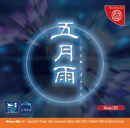

- Welcome to Touhou Wiki!
- Please register to edit. For assistance, check in with our Discord server or IRC channel.
Samidare
Samidare | |
|---|---|
|
 | |
| Developer |
RebRank |
| Publisher |
Amusement Makers |
| Released |
2002-2005 |
| Genre |
Vertical Danmaku Shooting Game |
| Gameplay |
Single-player story mode |
| Platforms | |
| Requirements |
|
| Official Site | |
- Note: This article is part of Project Blank by the Doujin circle RebRank.
Samidare (五月雨, lit. Early Summer Rain) is a shooting game by the Doujin circle RebRank, who branched off Amusement Makers after this game. It is a danmaku game with shields and is perhaps Amusement Makers' most well-known work in the West. It is the first game of Project Blank and since it's part of that series, it's neither a Touhou Project nor a Seihou Project game. However, it pays homage to both with elements such as the in-game history, the Extra Stage and its music.
Samidare takes place on and around Earth in the 30th century.
Name and Concept[edit]
The theme to this game has a typical futuristic feeling. According to one interview, Yoko, the leader of RebRank, states that many elements are taken from the PC-98 era of the Touhou Project, especially Mystic Square (as to which ZUN is aware of). The game is also an homage to Gradius, where the core of gameplay supposed to simulate Gradius' gameplay, as well as Thunder Force, where the option screen and the music selection have the same feeling.[1] With this, there are also Seihou Project elements.
The name "Samidare" (五月雨, lit. "Early Summer Rain") refers to heavy rain that occurs around the fifth lunar moon, or something that repeats over and over without lasting long.
Gameplay[edit]
Samidare is essentially a danmaku shooting game, though the dodging element of gameplay is slightly de-emphasized. This is due in part to the existence of a shield gameplay mechanism, which players can also use to unleash "hyper" attacks. While the player pilots different units in the main story mode and the extra stage, them been C22 and C23 respectively, there is no significant change in gameplay.
Story[edit]
In 2785, full-scale war breaks out on Earth over the various nations' rights to extraplanetary resources. This war ravages the Earth's environment, forcing humanity to flee underground. It also sees the creation of the M.R.S. (Machine manufacture Research and development System), an automated manufacturing and battle system designed to allow wars to take place without actual human participation. Unfortunately, within five years of humanity's flight underground, M.R.S. has completely taken control of the Earth's surface, and the first exploratory group from humanity's underground Shelters is annihilated.
Not long after this first exploratory mission, the M.R.S. system discovers the Absolute Dimensional Barrier technology and eventually refines it into the Dimensional Absolute Barrier Shield; it uses its SMD series of warplanes to test and perfect the system. Unfortunately, the prototype unit, SMD-00x, disappears after activating the barrier for the first time, and though M.R.S. is eventually able to establish contact with the dimensional void into which SMD-00x disappeared, it's never actually able to find the ship again. Nevertheless, the system continues developing the SMD series, creating smaller, more capable craft such as the SMD-24-0x "Samidare", which is piloted by a humanoid control unit, C-22, and the final unit, SMD-31-FX "Gesshoku", whose control unit, C-23, possesses an advanced, self-aware AI.
Meanwhile, humanity is busy urbanizing its Shelters, developing bipedal robots (armed lightweight walking vehicles, or ALWVs), and preparing to take the fight to M.R.S. Sixty years after the cataclysm that drove humanity underground, it finally emerges to retake the surface. By this time, M.R.S. has developed significant internal defects, and the battle is relatively short. Within two decades, almost all M.R.S.-created automata on the surface have been destroyed.
Samidare's main story mode follows the major missions of SMD-24-0x: its testing against the biomechanical construct Sylphid, its encounter with Anareta, the defense system of long-ruined space outpost Tetra-Biblos, and its encounter with the SMD series prototype, SMD-00x. The extra mode follows a flight of the SMD-31-FX several decades later, after SMD-24-0x makes it back to Earth (if you get the good ending).
Music[edit]
The music of this game includes 16 tracks composed by Dragon Lighter (竜ライター), stored in an .ogg format. All of them can be heard in the Music Room from the very first time you open the game, but the Music Room shows that there are 15 themes because the title theme is excluded. There are 2 extra songs found in the Omake folder with a text file, both also in an .ogg format.
Unlike ZUN's style of music, the music of this game consists of Trance and Techno music, which gives a more futuristic feeling to the game. Each title name is only in English.
Two of the themes in this game are arrangments from Shuusou Gyoku. Gates' theme ("Meets The Gates") is an arrange of "Firmament Army" (天空アーミー), the stage three boss theme, and VIVIT's theme ("Broken Strawberry Shortcake") is an arrange of "False Strawberry" (フォルスストロベリー), the first Stage theme. The theme "East of Eden" may have been based and designed on a Touhou feeling, since the third area of the Extra Stage is a reference to Touhou, which is where the theme is played.